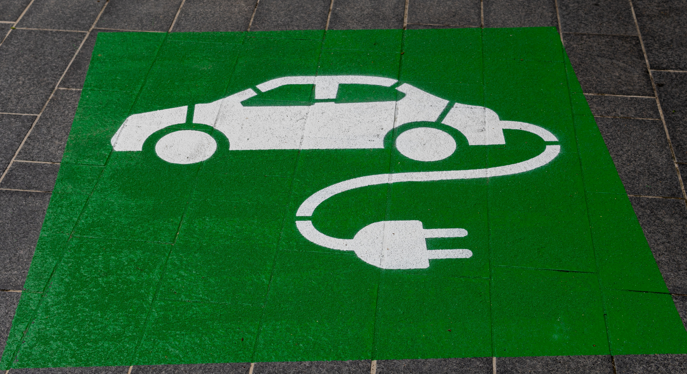

In an era marked by environmental challenges and a growing consciousness about the need for sustainable living, technology is playing a pivotal role in driving positive change. As the consequences of climate change become more evident, there is a growing demand for innovative green technologies that can help mitigate environmental impact and pave the way for a more sustainable future. From renewable energy solutions to innovative waste reduction techniques, green tech innovations are at the forefront of the sustainability revolution. In this article, we'll explore ten groundbreaking green tech innovations that are making a significant impact on our planet.

Solar Power Advancements: Solar power has been a cornerstone of the green energy revolution for decades, but recent advancements have made it even more accessible and efficient. High-efficiency solar panels, like those made with perovskite materials, are pushing the boundaries of energy conversion rates, making solar energy more cost-effective and practical for a wider range of applications For example portable solar chargers are popular for outdoor enthusiasts and people in remote areas. These small solar panels can charge smartphones, laptops, and other devices, providing a sustainable power source while on the go.

Energy Storage Solutions: One of the challenges of renewable energy sources like solar and wind is their intermittency. Energy storage solutions, particularly advanced battery technologies, are bridging this gap Lithium-ion batteries are evolving rapidly, but emerging technologies like solid-state batteries promise even greater energy density and safety. These innovations are not only essential for grid stability but also for powering electric vehicles (EVs) and reducing our reliance on fossil fuels. In South Australia, energy storage solutions have been deployed to address the issue of intermittent power supply from renewable sources. One notable project involves Tesla's Powerpack and Powerwall energy storage systems.

Green Building Materials: The construction industry is a major contributor to environmental degradation, but green building materials are changing the game. Sustainable materials like bamboo, recycled steel, and engineered wood products are being used to create energy-efficient and eco-friendly structures. Additionally, advanced insulation, energy-efficient windows, and rooftop gardens are becoming standard features in green buildings, reducing energy consumption and promoting a healthier living environment. The Edge Building in Amsterdam exemplifies the use of green building materials such as triple-glazed smart windows, solar panels, sustainable wood, and advanced insulation to create an energy-efficient and eco-friendly office space. These materials and features contribute to its status as one of the world's greenest and smartest office buildings.
Electric Vehicles (EVs): The automotive industry is undergoing a profound transformation as electric vehicles (EVs) gain popularity. EVs not only reduce greenhouse gas emissions but also contribute to cleaner air in urban areas. Major automakers are investing heavily in developing more affordable and high-performance EVs, while the expansion of charging infrastructure is making electric transportation more convenient for consumers. Additionally, advances in battery technology are extending EV range and reducing charging times, addressing key barriers to EV adoption.

Carbon Capture and Utilization (CCU): To combat the rising levels of atmospheric carbon dioxide, carbon capture and utilization (CCU) technologies are gaining traction. These innovative systems capture carbon emissions from industrial processes and convert them into valuable products such as building materials, fuels, and chemicals. CCU not only reduces the environmental impact of industrial operations but also helps turn carbon emissions into a resource rather than a pollutant. For example Carbon Engineering, a Canadian company, captures carbon dioxide from the atmosphere and converts it into synthetic fuels, like gasoline and diesel, through a process known as air capture and utilization, demonstrating the potential of CCU to combat climate change while producing valuable products.

Sustainable Agriculture Tech: Agriculture is a significant contributor to greenhouse gas emissions, but technology is helping make farming more sustainable. Precision agriculture uses data-driven approaches to optimize crop yields, reduce resource usage, and minimize environmental impact. Furthermore, innovations in vertical farming and aquaponics are enabling year-round, resource-efficient food production, reducing the need for large-scale land clearing and water consumption. For example, vertical farming facilities in urban areas, like the AeroFarms in Newark, New Jersey, utilize advanced hydroponic and LED lighting systems to grow leafy greens and herbs year-round with significantly less land and water compared to traditional farming methods.
In conclusion, The sustainability revolution is being driven by a wave of green tech innovations that are reshaping industries and reducing our environmental footprint. From renewable energy sources like solar and wind power to the electrification of transportation and the development of smart grids, these innovations offer promising solutions to the urgent challenges posed by climate change. Additionally, carbon capture and sustainable agriculture technologies are addressing critical issues in industry and food production. As these green tech innovations continue to evolve, they hold the key to a more sustainable and environmentally friendly future for us all.